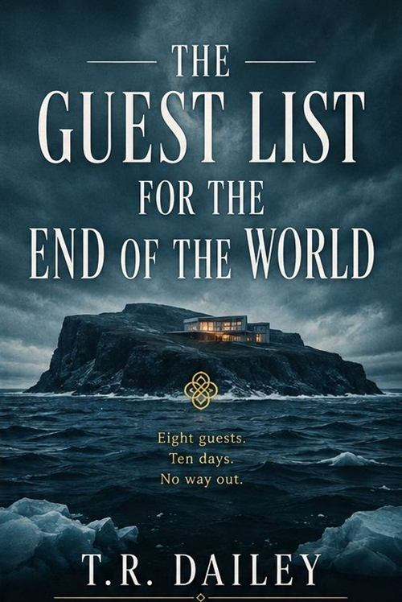

The Guest List for the End of the World
Standalone novel
Eight guests. Ten days. No way out.
Nora was hired to plan the social event of the decade: a hyper-exclusive, ten-day retreat on a private Icelandic island for eight tech moguls and their inner circles. But when communication with the mainland quietly goes dark on day three, the guests are left to wonder if it’s part of the experience — or if the world outside has actually fallen apart.
As luxury devolves into paranoia, Nora must navigate a web of high-stakes rivalries, fragile egos and lethal secrets to figure out who among the elite is a passenger, and who is driving the ship.
Where to find it
Retailer buttons are inactive placeholders on this demonstration site.
- Published
- June 2021
- Publisher
- Harrow & Pine
- Length
- 356 pages
- Formats
- Paperback, ebook, audiobook
- Recognition
- Translated into eleven languages
An excerpt
Day Three
The satellite phone had been dead for eleven hours before anyone thought to mention it to me, which tells you most of what you need to know about the guests.
Ilse found me in the pantry counting oysters — I count things when I am frightened, a habit from catering school — and said it the way you would mention a delayed flight. “The phone’s gone funny.” Then, after a pause she clearly considered generous: “Since about eleven last night.”
I did not say what I was thinking, which was that we had one boat, no crew until Thursday, and eight people upstairs who had each been personally promised that nothing on this island would be ordinary.
“That will be the weather,” I said.
There was no weather. The sea was flat as a countertop, the sky the colour of a nickel, and forty miles east, where the mainland should have been putting its lights on, there was nothing at all to see. There had been nothing to see the night before, either. I had not mentioned it.
By dinner, three of them had decided it was part of the experience. That was the worst of it. They were delighted.
Praise
What they said
-
“A locked-room thriller in which the room is an island and the lock is money. Dailey understands that the truly frightening thing about the very rich is how long they can go without noticing.”
The Ninth Street Review -
“Wickedly observed and genuinely tense. The catering details alone are worth the price; the last forty pages will keep you up.”
Pallas Books Monthly
These review quotations are fictional and were written for this demonstration site. They are not attributed to any real publication.